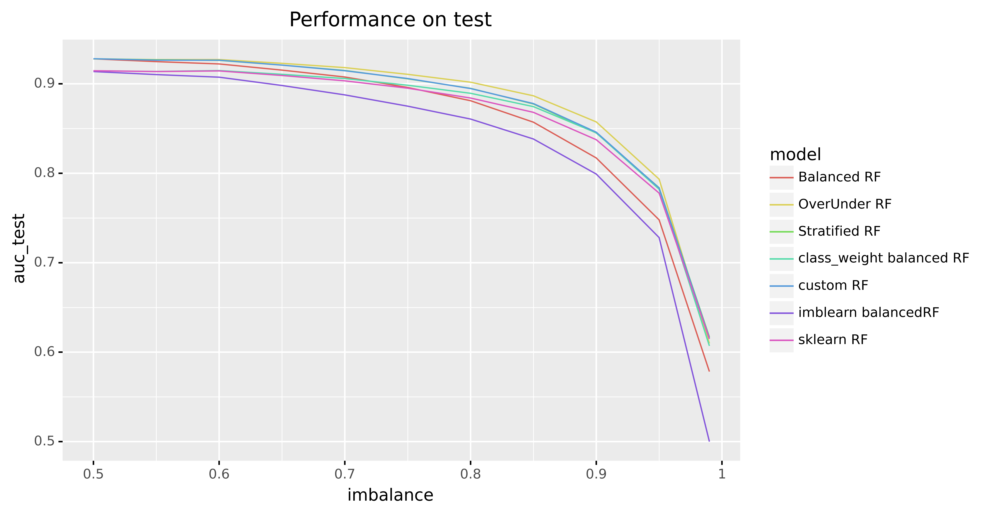

Adjusting the bootstrap in Random Forest
The RandomForest algorithm was introduced by Breiman back in 2001 (paper). In 2022 it is still a commonly used algorithm by many data scientists. The only difference is that the current scikit-learn implementation combines classifiers by averaging their probabilistic prediction, instead of letting each classifier vote for a single class (source).
In practice many classification problems are imbalanced: one class occurs more often than the other. In 2004, three years after the original paper, Breiman authored the paper 'Using Random Forest to Learn Imbalanced Data' (Chen, Chao, Andy Liaw, and Leo Breiman). In it, he explains:
In learning extremely imbalanced data, there is a significant probability that a bootstrap sample contains few or even none of the minority class, resulting in a tree with poor performance for predicting the minority class.
You can fix this by adjusting the bootstrap method in the random forest algorithm. For example by using a stratified bootstrap: sample with replacement from each class, which keeps the class imbalance. A further improved called the balanced random forest is proposed by Breiman, which first bootstraps the minority class and then samples with replacement the same number of cases from the majority class.
The paper states that balanced RF has 'performance superior to most of the existing techniques that we studied'. In this blogpost we'll replicate the results and run our own benchmarks, and see if and when a balanced RF would make sense to try in your own projects.
Theory first: Bootstrapping in Random Forests
In case you don't have the theory top of mind: Random Forests work by ensembling a collection (forest) of decision trees fitted on bootstrapped (random) subsets of the data.
The real magic is in the bootstrapping. Rows (number of observations \(n\)) are sampled with replacement until you have another set of size \(n\). This means the same row can occurs multiple times in your sample. In fact, each bootstrap sample can be expected to contain \(\approx\) 1/3 of observations (source). As an aside, Random Forests also take a random subsample without replacement of your columns (number of features \(m\)). This method is known as Random Patches (read more). Empirically a good value for classification problems is max_features = sqrt(n_features).

Experiment setup
Let's generate some data to create an imbalanced binary classification with a 10% minority class:
from sklearn.datasets import make_classification
X, y = make_classification(n_samples = 10_000, n_features = 20, n_informative=15, n_redundant=2, n_classes=2, weights=[.9, .1], flip_y=0.05, random_state=42)
X = pd.DataFrame(X)
Fitting a random forest is straight forward:
from sklearn.model_selection import train_test_split
from sklearn.ensemble import RandomForestClassifier
X_train, X_test, y_train, y_test = train_test_split(X, y, stratify=y, test_size=.2, random_state=42)
rf = RandomForestClassifier(max_depth=5, n_estimators=10, max_features='auto', random_state=42)
rf.fit(X_train, y_train)
For evaluation of different model variants we'll compute AUC (using roc_auc_score) because it tells us how well the model is able to separate between classes (we are free to set the probability threshold later). Because in imbalanced classification problems we usually are interested in high prediction accuracy over the minority class, while maintaining reasonable accuracy for the majority class, weighted accuracy (aka balanced_accuracy_score, the average recall for each class) is also interesting. It does however require a probability threshold to be set so we will leave it out of the comparison for now.
Another challenge with evaluating classifiers on imbalanced data is that we can get lucky. If we change the random seed for our train_test_split() we might get a very difference performance (despite using stratified sampling). To get an idea of the average performance of our model we can train and evaluate over multiple random seeds. Making sure your results are not dependent on a lucky random seed is something that is often overlooked (although I do recommend 42 ;)). You could do 20 repeats of 5-fold cross validation using RepeatedStratifiedKFold but instead I will just average the AUC metric over a fixed set of 100 random seeds used in train_test_split().
The most fair comparison between model variants would be to do a grid search with equal compute resources on each model. For the purposes of this blogpost, we'll use default random forest hyperparameters with the exception of using max_depth of 7 and min_samples_leaf of 150 to avoid overfitting. That gives us:
| Model | Train-AUC | Test-AUC |
|---|---|---|
| Sklearn RF | 0.9280 | 0.8939 |
Step 1: Our own RandomForest class
Before we can adapt the bootstrapping strategy, we need to implement a normal random forest to make sure we're not making any mistakes. We can re-use scikit-learn's DecisionTreeClassifer and overwrite the bootstrapping of the rows. I've highlighted parts relevant parts of my CustomRandomForestClassifier class, full code can be found at github.com/timvink/experiment-balanced-bootstrapping.
The .fit() method bootstraps a sample of our data and fits a decision tree model and repeats this n_estimator times:
class CustomRandomForestClassifier():
"""
Custom implementation of RF where we can change the bootstrapping method.
"""
# ...
def fit(self, X: pd.DataFrame, y: np.array):
if not isinstance(X, pd.DataFrame):
X = pd.DataFrame(X)
assert isinstance(y, np.ndarray)
if self.random_state is not None:
np.random.seed(self.random_state)
trees = list()
for i in range(self.n_estimators):
# Get our bootstrapped data
X_bootstrap, y_bootstrap = self._bootstrap_sample(X, y)
# Fit a decision tree
tree = DecisionTreeClassifier(
max_depth = self.max_depth,
min_samples_leaf = self.min_samples_leaf,
max_features = self.max_features,
random_state = self.random_state+i
)
tree.fit(X_bootstrap, y_bootstrap)
trees.append(tree)
self.trees = trees
return self
The bootstrap itself is done with numpy.randint:
# ...
def _bootstrap_sample(self, X: pd.DataFrame, y: np.ndarray) -> Tuple[pd.DataFrame, np.ndarray]:
"""
Returns bootstrapped indices of X
(same number of rows, sampled with replacement)
Args:
X: pandas dataframe
Return:
nd.array with indices
"""
n_samples = X.shape[0]
indices = np.random.randint(low=0, high=n_samples, size=n_samples)
X_bootstrap = X.iloc[indices]
y_bootstrap = y[indices]
return X_bootstrap, y_bootstrap
And prediction is done with 'soft' voting (averaging all probabilities):
# ...
def predict_proba(self, X: pd.DataFrame):
"""
Here we use a 'soft' voting ensemble
average all probabilities
See https://github.com/scikit-learn/scikit-learn/blob/1495f69242646d239d89a5713982946b8ffcf9d9/sklearn/ensemble/voting.py#L320
"""
probas = [clf.predict_proba(X) for clf in self.trees]
probas = np.asarray(probas)
avg = np.average(probas, axis=0)
return avg
Then we can verify the implementation is correct:
| Model | Train-AUC | Test-AUC | Delta |
|---|---|---|---|
| Custom RF | 0.8815 | 0.8459 | 0.0356 |
| sklearn RF | 0.8682 | 0.8375 | 0.0307 |
Scores are similar but differ, which is likely due to a minor difference in implementation. We'll take it as is and use the custom RF as the baseline to start experimenting with different bootstrap techniques.
Stratified bootstrapping
Stratified Sampling means we make sure each bootstrap has the same percentage of samples of each target class as the complete set. Basically it's two bootstraps, one on the minority class and one on the majority class. Implementation is easy with sklearn's resample():
from sklearn.utils import resample
class StratifiedRandomForest(CustomRandomForestClassifier):
def _bootstrap_sample(self, X: pd.DataFrame, y: np.ndarray) -> Tuple[pd.DataFrame, np.ndarray]:
"""
Stratified bootstrap sample.
This means the class ratio should be the same in the bootstrap.
"""
X_bootstrap, y_bootstrap = resample(X, y, stratify = y)
return X_bootstrap, y_bootstrap
Performance degrades ever so slightly, but is still very similar to the base class. This might be more effective if we did not already stratify our train/test split as well.
| Model | Train-AUC | Test-AUC | Delta |
|---|---|---|---|
| Custom RF | 0.8815 | 0.8459 | 0.0356 |
| Stratified RF | 0.8813 | 0.8450 | 0.0363 |
Balanced bootstrapping
Breiman's balanced random forest "first bootstraps the minority class and then samples with replacement the same number of cases from the majority class.". In code:
class BalancedRandomForest(CustomRandomForestClassifier):
def _bootstrap_sample(self, X: pd.DataFrame, y: np.ndarray) -> Tuple[pd.DataFrame, np.ndarray]:
"""
Balanced bootstrap. Implementation of Breiman's BalancedRandomForest.
We create a dataset with an articial equal class distribution:
first bootstraps the minority class and then samples with replacement the same number of cases from the majority class.
"""
# Find majority class, 0 or 1
counts = np.bincount(y)
minority_class = np.argmin(counts)
n_minority = counts[minority_class]
# bootstrap minority class
indices_minority = np.random.choice(
np.where(y == minority_class)[0],
size = n_minority,
replace = True)
# bootstrap majority class with minority size
indices_majority = np.random.choice(
np.where(y != minority_class)[0],
size = n_minority,
replace = True)
indices = np.hstack([indices_majority, indices_minority])
np.random.shuffle(indices) # in-place
X_bootstrap = X.iloc[indices]
y_bootstrap = y[indices]
return X_bootstrap, y_bootstrap
The results:
| Model | Train-AUC | Test-AUC | Delta |
|---|---|---|---|
| Custom RF | 0.8815 | 0.8459 | 0.0356 |
| Stratified RF | 0.8813 | 0.8450 | 0.0363 |
| Balanced RF | 0.8391 | 0.8171 | 0.0220 |
The BalancedRandomForest algorithm actually performs significantly worse. But because each tree sees less observations (2x size of minority class instead of a bootstrap of all observations), we might want to change the hyperparameters to regularize less (f.e. by increasing max_depth or decreasing min_sample_leaf) to do the algorithm more justice. We should also note that in the current comparison the balanced RF is overfitting a lot less (difference between train and test is smaller).
Over Under sampling
While we're at it, we also create a OverUnderRandomForest where we sample with replacement from the minority class until we have 50% of \(n\) (oversampling), and then sample with replacement from the majority class (undersampling).
The results:
| Model | Train-AUC | Test-AUC | Delta |
|---|---|---|---|
| OverUnder RF | 0.9023 | 0.8574 | 0.0449 |
| Custom RF | 0.8815 | 0.8459 | 0.0356 |
| Stratified RF | 0.8813 | 0.8450 | 0.0363 |
| Balanced RF | 0.8391 | 0.8171 | 0.0220 |
Interestingly, our OverUnderRandomForest now has the best test score, but also seems to overfit more (as each decision tree sees more unique observations).
Balancing class weight
Another 'trick' is to penalize mistakes on the minority class by an amount proportional to how under-represented it is. This is actually available as the class_weight='balanced' parameter in some sklearn algorithms and some packages like xgboost, and we'll throw it in there just for comparison.
For this particular problem it does not seem to help much though:
| Model | Train-AUC | Test-AUC | Delta |
|---|---|---|---|
| OverUnder RF | 0.9023 | 0.8574 | 0.0449 |
| Custom RF | 0.8815 | 0.8459 | 0.0356 |
| class weight balanced RF | 0.8832 | 0.8452 | 0.0380 |
| Stratified RF | 0.8813 | 0.8450 | 0.0363 |
| Balanced RF | 0.8391 | 0.8171 | 0.0220 |
Other tactics
Simple undersampling majority or oversampling minority on train/test split is already a very performant tactic. Undersampling majority for random forests might have a slight advantage (Chen 2004). Another paper finds oversampling minority till balance the best strategy, at least for convolution neural networks (Buda 2017). It makes sense because undersampling means you throw away information, but you do need to have to computational resources to deal with the additional observations from oversampling.
Another common strategy is to adjust the probability threshold for a classifier after training it, which you can visualize using yellowbrick.classifier.DiscriminationThreshold() and find interactively using streamlit, or programmatically using scikit-lego's Thresholder. You could even optimize your classifiers to focus on certain areas by considering partial AUC as a metric, which is supported in scikit-learn's roc_auc_score(max_fpr=...).
What about other imbalance ratios?
If you look at the results when varying the imbalance ratios the scores the differences are marginal. OverUnderSampling does seems to have a slight edge, but I'm sure if you spend a bit of time on hyperparameter tuning of each variant the differences would be even smaller.

Conclusion
Experimenting with bootstrap sampling is definitely interesting, and can give you a slight edge, but your time is better spent just understanding your data and the modelling problem rather than exploring these slight model variants. There is no silver bullet, and I will keep using the 'vanilla' random forest implementation as it's a great and fast baseline to use before applying more complex models like gradient boosted models.
If you want to try a balanced RandomForest, you can use the BalancedRandomForest implementation from imbalanced-learn, which also offers a lot of other algorithms and sampling techniques.